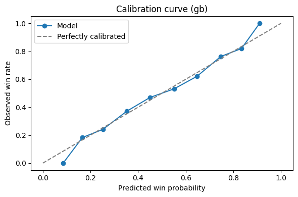

Code
import pandas as pd
import numpy as np
import glob
import os
import matplotlib.pyplot as plt
import seaborn as sns
pd.set_option('display.max_columns', None)
os.chdir("D:/DATA SCIENCE NEW/tennis_matches")Author: Ivan Tregub
Course: Data Science University: Charles University (MFF UK)
Academic year: 2025/2026
This project analyses professional tennis matches from ATP and WTA tours in the period 2015–2023.
The dataset contains detailed information about tournaments, players, match outcomes and rich point-level serving statistics (aces, double faults, first serves in, break points, etc.).
The goal is to understand how different aspects of the game – such as court surface, match format and serving performance – are related to match outcomes and player rankings.
The analysis follows the CRISP-DM methodology: business understanding, data understanding, data preparation, modeling (where relevant), evaluation and conclusion.
This section provides a complete description of all columns included in the ATP & WTA match dataset (2015–2023).
| Column | Description |
|---|---|
tourney_id |
Unique tournament identifier (YYYY-XXX). Format varies by data source. |
tourney_name |
Official name of the tournament. |
surface |
Court surface: Hard, Clay, Grass, Carpet (rare), or missing. |
draw_size |
Number of players in the main draw (e.g., 32, 64, 128). |
tourney_level |
Tournament category (ATP: G=Grand Slam, M=Masters 1000, A=ATP 250/500, C=Challenger; WTA: PM, P, I, ITF levels). |
tourney_date |
Start date of tournament week in YYYYMMDD format. |
| Column | Description |
|---|---|
match_num |
Internal match ID within the tournament. |
score |
Match score in tennis format (e.g., 6-4 3-6 7-5). |
best_of |
Match format: 3 or 5 sets. |
round |
Tournament round (R128, R64, R32, R16, QF, SF, F, etc.). |
minutes |
Match duration in minutes (may be missing). |
| Column | Description |
|---|---|
winner_id |
Player ID of the match winner. |
winner_seed |
Seed number of the winner. |
winner_entry |
How the player entered: WC=wild card, Q=qualifier, LL=lucky loser, PR=protected ranking, etc. |
winner_name |
Full name of the winning player. |
winner_hand |
Playing hand: R=right-handed, L=left-handed, U=unknown. |
winner_ht |
Height of the winner in centimeters. |
winner_ioc |
Nationality code (ISO-3). |
winner_age |
Age of the winner on the tournament date. |
| Column | Description |
|---|---|
w_ace |
Winner’s aces. |
w_df |
Winner’s double faults. |
w_svpt |
Total serve points played. |
w_1stIn |
First serves made. |
w_1stWon |
First-serve points won. |
w_2ndWon |
Second-serve points won. |
w_SvGms |
Serve games played. |
w_bpSaved |
Break points saved. |
w_bpFaced |
Break points faced. |
| Column | Description |
|---|---|
winner_rank |
Winner’s ATP/WTA ranking at event date. |
winner_rank_points |
Ranking points at event date. |
| Column | Description |
|---|---|
loser_id |
Player ID of the losing player. |
loser_seed |
Seed number of the loser. |
loser_entry |
Entry type (Q, WC, LL, PR, etc.). |
loser_name |
Full name of the losing player. |
loser_hand |
Playing hand. |
loser_ht |
Height in cm. |
loser_ioc |
Nationality code. |
loser_age |
Age of the loser at the tournament date. |
| Column | Description |
|---|---|
l_ace |
Loser’s aces. |
l_df |
Loser’s double faults. |
l_svpt |
Serve points played. |
l_1stIn |
First serves made. |
l_1stWon |
First-serve points won. |
l_2ndWon |
Second-serve points won. |
l_SvGms |
Serve games played. |
l_bpSaved |
Break points saved. |
l_bpFaced |
Break points faced. |
| Column | Description |
|---|---|
loser_rank |
Loser’s ATP/WTA ranking at event date. |
loser_rank_points |
Ranking points at event date. |
This data dictionary provides a structured overview of all fields and is used as a reference throughout the analysis.
The main objective is to perform an exploratory data analysis (EDA) of ATP & WTA matches, quantify how match conditions and serving statistics relate to performance and winning, and then use these signals to build and evaluate models that predict match outcomes.
More specifically, we address the following research questions:
In this section, we load all available CSV files (ATP & WTA matches from 2015–2023), inspect their structure, and combine them into a single unified DataFrame.
This merged dataset will be the basis for all subsequent analysis.
import pandas as pd
import numpy as np
import glob
import os
import matplotlib.pyplot as plt
import seaborn as sns
pd.set_option('display.max_columns', None)
os.chdir("D:/DATA SCIENCE NEW/tennis_matches")# Find all CSV match files in the directory
files = glob.glob("*.csv")
files['atp_matches_2015.csv',
'atp_matches_2016.csv',
'atp_matches_2017.csv',
'atp_matches_2018.csv',
'atp_matches_2019.csv',
'atp_matches_2020.csv',
'atp_matches_2021.csv',
'atp_matches_2022.csv',
'atp_matches_2023.csv',
'wta_matches_2015.csv',
'wta_matches_2016.csv',
'wta_matches_2017.csv',
'wta_matches_2018.csv',
'wta_matches_2019.csv',
'wta_matches_2020.csv',
'wta_matches_2021.csv',
'wta_matches_2022.csv',
'wta_matches_2023.csv']dfs = []
for f in files:
df = pd.read_csv(f)
df["source_file"] = f
dfs.append(df)
# Combine all datasets
matches = pd.concat(dfs, ignore_index=True)
matches.head()| tourney_id | tourney_name | surface | draw_size | tourney_level | tourney_date | match_num | winner_id | winner_seed | winner_entry | winner_name | winner_hand | winner_ht | winner_ioc | winner_age | loser_id | loser_seed | loser_entry | loser_name | loser_hand | loser_ht | loser_ioc | loser_age | score | best_of | round | minutes | w_ace | w_df | w_svpt | w_1stIn | w_1stWon | w_2ndWon | w_SvGms | w_bpSaved | w_bpFaced | l_ace | l_df | l_svpt | l_1stIn | l_1stWon | l_2ndWon | l_SvGms | l_bpSaved | l_bpFaced | winner_rank | winner_rank_points | loser_rank | loser_rank_points | source_file | |
|---|---|---|---|---|---|---|---|---|---|---|---|---|---|---|---|---|---|---|---|---|---|---|---|---|---|---|---|---|---|---|---|---|---|---|---|---|---|---|---|---|---|---|---|---|---|---|---|---|---|---|
| 0 | 2015-339 | Brisbane | Hard | 28 | A | 20150104 | 1 | 105357 | NaN | WC | John Millman | R | 183.0 | AUS | 25.5 | 105733 | NaN | Q | Rhyne Williams | R | 185.0 | USA | 23.7 | 6-3 6-1 | 3 | R32 | 65.0 | 6.0 | 2.0 | 44.0 | 24.0 | 19.0 | 14.0 | 8.0 | 1.0 | 1.0 | 3.0 | 4.0 | 50.0 | 31.0 | 20.0 | 5.0 | 8.0 | 1.0 | 5.0 | 153.0 | 328.0 | 220.0 | 221.0 | atp_matches_2015.csv |
| 1 | 2015-339 | Brisbane | Hard | 28 | A | 20150104 | 2 | 103813 | NaN | NaN | Jarkko Nieminen | L | 185.0 | FIN | 33.4 | 106045 | NaN | Q | Denis Kudla | R | 180.0 | USA | 22.3 | 4-6 6-1 6-4 | 3 | R32 | 104.0 | 4.0 | 0.0 | 92.0 | 59.0 | 39.0 | 17.0 | 14.0 | 4.0 | 7.0 | 6.0 | 1.0 | 83.0 | 50.0 | 26.0 | 19.0 | 13.0 | 3.0 | 8.0 | 73.0 | 689.0 | 123.0 | 440.0 | atp_matches_2015.csv |
| 2 | 2015-339 | Brisbane | Hard | 28 | A | 20150104 | 3 | 105902 | NaN | WC | James Duckworth | R | 183.0 | AUS | 22.9 | 104468 | 6.0 | NaN | Gilles Simon | R | 183.0 | FRA | 30.0 | 6-2 6-2 | 3 | R32 | 68.0 | 4.0 | 0.0 | 45.0 | 27.0 | 20.0 | 11.0 | 8.0 | 2.0 | 3.0 | 2.0 | 1.0 | 56.0 | 37.0 | 22.0 | 5.0 | 8.0 | 10.0 | 15.0 | 125.0 | 430.0 | 21.0 | 1730.0 | atp_matches_2015.csv |
| 3 | 2015-339 | Brisbane | Hard | 28 | A | 20150104 | 4 | 104871 | NaN | NaN | Jeremy Chardy | R | 188.0 | FRA | 27.8 | 104979 | NaN | NaN | Andrey Golubev | R | 185.0 | KAZ | 27.4 | 6-4 6-4 | 3 | R32 | 69.0 | 7.0 | 1.0 | 53.0 | 39.0 | 31.0 | 11.0 | 10.0 | 0.0 | 0.0 | 9.0 | 2.0 | 57.0 | 38.0 | 30.0 | 8.0 | 10.0 | 1.0 | 3.0 | 31.0 | 1195.0 | 72.0 | 691.0 | atp_matches_2015.csv |
| 4 | 2015-339 | Brisbane | Hard | 28 | A | 20150104 | 5 | 105373 | NaN | NaN | Martin Klizan | L | 190.0 | SVK | 25.4 | 103781 | NaN | NaN | Jurgen Melzer | L | 183.0 | AUT | 33.6 | 6-7(5) 7-6(6) 6-1 | 3 | R32 | 144.0 | 9.0 | 4.0 | 130.0 | 79.0 | 55.0 | 27.0 | 16.0 | 6.0 | 8.0 | 4.0 | 4.0 | 95.0 | 62.0 | 40.0 | 19.0 | 15.0 | 4.0 | 8.0 | 34.0 | 1094.0 | 110.0 | 505.0 | atp_matches_2015.csv |
matches.info()<class 'pandas.core.frame.DataFrame'>
RangeIndex: 46658 entries, 0 to 46657
Data columns (total 50 columns):
# Column Non-Null Count Dtype
--- ------ -------------- -----
0 tourney_id 46658 non-null object
1 tourney_name 46658 non-null object
2 surface 46658 non-null object
3 draw_size 46658 non-null int64
4 tourney_level 46658 non-null object
5 tourney_date 46658 non-null int64
6 match_num 46658 non-null int64
7 winner_id 46658 non-null int64
8 winner_seed 19381 non-null object
9 winner_entry 6456 non-null object
10 winner_name 46658 non-null object
11 winner_hand 46652 non-null object
12 winner_ht 44529 non-null float64
13 winner_ioc 46658 non-null object
14 winner_age 46649 non-null float64
15 loser_id 46658 non-null int64
16 loser_seed 11272 non-null object
17 loser_entry 10145 non-null object
18 loser_name 46658 non-null object
19 loser_hand 46624 non-null object
20 loser_ht 43103 non-null float64
21 loser_ioc 46658 non-null object
22 loser_age 46642 non-null float64
23 score 46658 non-null object
24 best_of 46658 non-null int64
25 round 46658 non-null object
26 minutes 40605 non-null float64
27 w_ace 44327 non-null float64
28 w_df 44322 non-null float64
29 w_svpt 44327 non-null float64
30 w_1stIn 44327 non-null float64
31 w_1stWon 44327 non-null float64
32 w_2ndWon 44327 non-null float64
33 w_SvGms 44010 non-null float64
34 w_bpSaved 44327 non-null float64
35 w_bpFaced 44327 non-null float64
36 l_ace 44327 non-null float64
37 l_df 44322 non-null float64
38 l_svpt 44327 non-null float64
39 l_1stIn 44327 non-null float64
40 l_1stWon 44327 non-null float64
41 l_2ndWon 44327 non-null float64
42 l_SvGms 44010 non-null float64
43 l_bpSaved 44327 non-null float64
44 l_bpFaced 44327 non-null float64
45 winner_rank 46246 non-null float64
46 winner_rank_points 46246 non-null float64
47 loser_rank 45795 non-null float64
48 loser_rank_points 45795 non-null float64
49 source_file 46658 non-null object
dtypes: float64(27), int64(6), object(17)
memory usage: 17.8+ MBBefore proceeding, we check: - number of rows and columns
- dtypes (especially tourney_date)
- presence of missing values
- whether numeric columns were imported correctly
- consistency of key fields (e.g., best_of ∈ {3,5})
matches["tourney_date"] = pd.to_datetime(matches["tourney_date"], format="%Y%m%d", errors="coerce")
matches["tourney_date"].head()0 2015-01-04
1 2015-01-04
2 2015-01-04
3 2015-01-04
4 2015-01-04
Name: tourney_date, dtype: datetime64[ns]missing_percent = matches.isna().mean().sort_values(ascending=False)
missing_percent.head(20)winner_entry 0.861631
loser_entry 0.782567
loser_seed 0.758412
winner_seed 0.584616
minutes 0.129731
loser_ht 0.076193
l_SvGms 0.056753
w_SvGms 0.056753
w_df 0.050066
l_df 0.050066
w_1stWon 0.049959
w_ace 0.049959
w_bpFaced 0.049959
w_bpSaved 0.049959
l_svpt 0.049959
l_1stIn 0.049959
l_1stWon 0.049959
w_2ndWon 0.049959
l_2ndWon 0.049959
l_bpSaved 0.049959
dtype: float64matches.describe(include='all').T| count | unique | top | freq | mean | min | 25% | 50% | 75% | max | std | |
|---|---|---|---|---|---|---|---|---|---|---|---|
| tourney_id | 46658 | 2292 | 2020-580 | 254 | NaN | NaN | NaN | NaN | NaN | NaN | NaN |
| tourney_name | 46658 | 1501 | Australian Open | 2286 | NaN | NaN | NaN | NaN | NaN | NaN | NaN |
| surface | 46658 | 4 | Hard | 28082 | NaN | NaN | NaN | NaN | NaN | NaN | NaN |
| draw_size | 46658.0 | NaN | NaN | NaN | 59.638261 | 2.0 | 32.0 | 32.0 | 96.0 | 128.0 | 42.561466 |
| tourney_level | 46658 | 10 | A | 13024 | NaN | NaN | NaN | NaN | NaN | NaN | NaN |
| tourney_date | 46658 | NaN | NaN | NaN | 2019-03-20 15:44:39.051824128 | 2015-01-04 00:00:00 | 2017-01-09 00:00:00 | 2019-01-14 00:00:00 | 2021-08-09 00:00:00 | 2023-08-28 00:00:00 | NaN |
| match_num | 46658.0 | NaN | NaN | NaN | 226.057739 | 1.0 | 145.0 | 272.0 | 287.0 | 2701.0 | 195.749689 |
| winner_id | 46658.0 | NaN | NaN | NaN | 160808.685906 | 100644.0 | 105676.0 | 201314.5 | 202475.0 | 263853.0 | 48521.068383 |
| winner_seed | 19381.0 | 68.0 | 1.0 | 1992.0 | NaN | NaN | NaN | NaN | NaN | NaN | NaN |
| winner_entry | 6456 | 8 | Q | 3715 | NaN | NaN | NaN | NaN | NaN | NaN | NaN |
| winner_name | 46658 | 1481 | Novak Djokovic | 478 | NaN | NaN | NaN | NaN | NaN | NaN | NaN |
| winner_hand | 46652 | 3 | R | 40832 | NaN | NaN | NaN | NaN | NaN | NaN | NaN |
| winner_ht | 44529.0 | NaN | NaN | NaN | 181.269689 | 155.0 | 175.0 | 182.0 | 188.0 | 211.0 | 9.337922 |
| winner_ioc | 46658 | 110 | USA | 4997 | NaN | NaN | NaN | NaN | NaN | NaN | NaN |
| winner_age | 46649.0 | NaN | NaN | NaN | 26.552475 | 14.1 | 23.3 | 26.3 | 29.5 | 44.9 | 4.397126 |
| loser_id | 46658.0 | NaN | NaN | NaN | 161007.790025 | 100644.0 | 105732.0 | 201320.0 | 202504.0 | 263852.0 | 48659.24227 |
| loser_seed | 11272.0 | 69.0 | 8.0 | 914.0 | NaN | NaN | NaN | NaN | NaN | NaN | NaN |
| loser_entry | 10145 | 9 | Q | 5572 | NaN | NaN | NaN | NaN | NaN | NaN | NaN |
| loser_name | 46658 | 2064 | Adrian Mannarino | 230 | NaN | NaN | NaN | NaN | NaN | NaN | NaN |
| loser_hand | 46624 | 3 | R | 39969 | NaN | NaN | NaN | NaN | NaN | NaN | NaN |
| loser_ht | 43103.0 | NaN | NaN | NaN | 180.691228 | 154.0 | 174.0 | 181.0 | 188.0 | 211.0 | 9.266405 |
| loser_ioc | 46658 | 122 | USA | 5048 | NaN | NaN | NaN | NaN | NaN | NaN | NaN |
| loser_age | 46642.0 | NaN | NaN | NaN | 26.561498 | 14.2 | 23.2 | 26.4 | 29.7 | 46.9 | 4.521383 |
| score | 46658 | 6710 | 6-3 6-4 | 1530 | NaN | NaN | NaN | NaN | NaN | NaN | NaN |
| best_of | 46658.0 | NaN | NaN | NaN | 3.217412 | 3.0 | 3.0 | 3.0 | 3.0 | 5.0 | 0.622546 |
| round | 46658 | 9 | R32 | 14575 | NaN | NaN | NaN | NaN | NaN | NaN | NaN |
| minutes | 40605.0 | NaN | NaN | NaN | 105.656323 | 0.0 | 77.0 | 98.0 | 129.0 | 2475.0 | 42.338075 |
| w_ace | 44327.0 | NaN | NaN | NaN | 5.331626 | 0.0 | 2.0 | 4.0 | 7.0 | 75.0 | 5.115115 |
| w_df | 44322.0 | NaN | NaN | NaN | 2.971955 | 0.0 | 1.0 | 2.0 | 4.0 | 72.0 | 2.498113 |
| w_svpt | 44327.0 | NaN | NaN | NaN | 74.826246 | 0.0 | 55.0 | 70.0 | 91.0 | 918.0 | 27.63791 |
| w_1stIn | 44327.0 | NaN | NaN | NaN | 46.880321 | 0.0 | 34.0 | 44.0 | 57.0 | 702.0 | 18.279316 |
| w_1stWon | 44327.0 | NaN | NaN | NaN | 33.998037 | 0.0 | 25.0 | 32.0 | 41.0 | 351.0 | 12.767586 |
| w_2ndWon | 44327.0 | NaN | NaN | NaN | 14.878471 | 0.0 | 10.0 | 14.0 | 18.0 | 161.0 | 6.423742 |
| w_SvGms | 44010.0 | NaN | NaN | NaN | 11.712293 | 0.0 | 9.0 | 11.0 | 14.0 | 49.0 | 4.035616 |
| w_bpSaved | 44327.0 | NaN | NaN | NaN | 3.709161 | 0.0 | 1.0 | 3.0 | 5.0 | 108.0 | 3.145663 |
| w_bpFaced | 44327.0 | NaN | NaN | NaN | 5.704492 | 0.0 | 2.0 | 5.0 | 8.0 | 180.0 | 4.306565 |
| l_ace | 44327.0 | NaN | NaN | NaN | 3.871094 | 0.0 | 1.0 | 3.0 | 5.0 | 67.0 | 4.432525 |
| l_df | 44322.0 | NaN | NaN | NaN | 3.657033 | 0.0 | 2.0 | 3.0 | 5.0 | 36.0 | 2.661933 |
| l_svpt | 44327.0 | NaN | NaN | NaN | 77.100368 | 0.0 | 57.0 | 72.0 | 93.0 | 972.0 | 27.686633 |
| l_1stIn | 44327.0 | NaN | NaN | NaN | 47.300787 | 0.0 | 34.0 | 44.0 | 57.0 | 774.0 | 18.641329 |
| l_1stWon | 44327.0 | NaN | NaN | NaN | 29.865793 | 0.0 | 20.0 | 28.0 | 37.0 | 369.0 | 13.768027 |
| l_2ndWon | 44327.0 | NaN | NaN | NaN | 13.123288 | 0.0 | 8.0 | 12.0 | 17.0 | 74.0 | 6.670109 |
| l_SvGms | 44010.0 | NaN | NaN | NaN | 11.509089 | 0.0 | 9.0 | 11.0 | 14.0 | 50.0 | 4.013222 |
| l_bpSaved | 44327.0 | NaN | NaN | NaN | 4.861845 | 0.0 | 2.0 | 4.0 | 7.0 | 81.0 | 3.250418 |
| l_bpFaced | 44327.0 | NaN | NaN | NaN | 9.209511 | 0.0 | 6.0 | 9.0 | 12.0 | 180.0 | 4.169997 |
| winner_rank | 46246.0 | NaN | NaN | NaN | 75.683043 | 1.0 | 19.0 | 46.0 | 87.0 | 2101.0 | 120.907744 |
| winner_rank_points | 46246.0 | NaN | NaN | NaN | 1816.192687 | 1.0 | 702.0 | 1109.0 | 2141.0 | 16950.0 | 1977.037348 |
| loser_rank | 45795.0 | NaN | NaN | NaN | 108.917305 | 1.0 | 35.0 | 68.0 | 115.0 | 2147.0 | 161.125281 |
| loser_rank_points | 45795.0 | NaN | NaN | NaN | 1186.489071 | 1.0 | 541.0 | 845.0 | 1340.0 | 16950.0 | 1233.859784 |
| source_file | 46658 | 18 | atp_matches_2015.csv | 2943 | NaN | NaN | NaN | NaN | NaN | NaN | NaN |
matches.info().datetime.In this section, we examine how many matches were played on each type of surface
(Hard, Clay, Grass, Carpet).
Court surface is one of the most important contextual variables in tennis, as it affects play style, rally length, serve advantage, and match duration.
surface_counts = matches["surface"].value_counts(dropna=False)
surface_countssurface
Hard 28082
Clay 13526
Grass 5031
Carpet 19
Name: count, dtype: int64surface_percent = (surface_counts / len(matches) * 100).round(2)
surface_percentsurface
Hard 60.19
Clay 28.99
Grass 10.78
Carpet 0.04
Name: count, dtype: float64plt.figure(figsize=(8,5))
sns.barplot(
x=surface_counts.index,
y=surface_counts.values,
errorbar=None
)
plt.title("Number of Matches by Surface (2015–2023)", fontsize=14)
plt.xlabel("Surface")
plt.ylabel("Match Count")
plt.tight_layout()
plt.show()
The merged dataset includes 46,658 matches played between 2015 and 2023.
The distribution across court surfaces is as follows:
Interpretation:
Hard courts dominate the ATP/WTA calendar, accounting for roughly 60% of all matches. Clay is the second most common surface, followed by a much smaller share of grass-court matches, reflecting the short grass season. Carpet matches appear only in a negligible number of events and are largely outdated in professional tennis.
This distribution provides important context for later comparisons (e.g., match duration, serve statistics), as statistics on some surfaces (especially grass and carpet) rely on significantly smaller sample sizes.
In this section, we examine how long matches last on each type of surface.
Tennis surfaces differ in speed and rally length, which directly affects match duration:
We compute the average match duration (in minutes) and then compare the surfaces.
duration_by_surface = (
matches
.groupby("surface")["minutes"]
.mean()
.round(2)
.sort_values(ascending=False)
)
duration_by_surfacesurface
Carpet 122.00
Grass 107.18
Clay 107.13
Hard 104.67
Name: minutes, dtype: float64plt.figure(figsize=(8,5))
sns.boxplot(
data=matches,
x="surface",
y="minutes"
)
plt.ylim(-50, 450)
plt.title("Match Duration by Surface (2015–2023)", fontsize=14)
plt.xlabel("Surface")
plt.ylabel("Minutes")
plt.tight_layout()
plt.show()
The mean match duration by surface (2015–2023) is:
Carpet technically shows the longest average match duration, but this result is based on only 19 matches, so it is not statistically reliable.
If we focus on the three main tour surfaces, the pattern is:
This is consistent with tennis intuition: grass tends to shorten points due to fast surface speed, while clay extends rallies, but the overall match duration is also affected by scoring dynamics, player styles and tournament formats.
In this section, we analyze how key serving metrics differ across the three main tennis surfaces: hard, clay, and grass.
Surface type has a major influence on serve effectiveness because it affects: - ball speed and bounce, - rally length, - the ability to produce aces or force return errors, - pressure on service games (break points faced and saved).
A fast surface such as grass strongly rewards aggressive serving and produces quick points.
A slow surface like clay reduces the impact of the serve and makes holding serve more difficult.
Hard courts sit in the middle, offering a balanced environment.
We examine the following serving metrics for all players (winners and losers combined):
df_per_game)1st serve pct)1st serve win %)2nd serve win %)bp_save_pct)We convert the match-level data into a player-level dataset (two observations per match),
which allows us to compare serving performance across surfaces consistently.
The goal of this section is to answer:
In the following cells, we compute all relevant serving metrics, build a player-level dataset,
visualize distributions by surface, and summarize the key observations.
# Create serving metrics at match level
def safe_div(n, d):
return (n / d).replace([np.inf, -np.inf], np.nan)
matches["w_1st_pct"] = safe_div(matches["w_1stIn"], matches["w_svpt"])
matches["l_1st_pct"] = safe_div(matches["l_1stIn"], matches["l_svpt"])
matches["w_1stWon_pct"] = safe_div(matches["w_1stWon"], matches["w_1stIn"])
matches["l_1stWon_pct"] = safe_div(matches["l_1stWon"], matches["l_1stIn"])
# Second-serve win %
matches["w_2ndIn_calc"] = (matches["w_svpt"] - matches["w_1stIn"]).clip(lower=0)
matches["l_2ndIn_calc"] = (matches["l_svpt"] - matches["l_1stIn"]).clip(lower=0)
matches["w_2ndWon_pct"] = safe_div(matches["w_2ndWon"], matches["w_2ndIn_calc"])
matches["l_2ndWon_pct"] = safe_div(matches["l_2ndWon"], matches["l_2ndIn_calc"])
# Double faults per service game
matches["w_df_per_game"] = safe_div(matches["w_df"], matches["w_SvGms"])
matches["l_df_per_game"] = safe_div(matches["l_df"], matches["l_SvGms"])
# Break-point save %
matches["w_bp_pct"] = safe_div(matches["w_bpSaved"], matches["w_bpFaced"]).fillna(1.0)
matches["l_bp_pct"] = safe_div(matches["l_bpSaved"], matches["l_bpFaced"]).fillna(1.0)# Build player-level dataset for surface comparisons
df_surface = pd.DataFrame({
"surface": pd.concat([matches["surface"], matches["surface"]]),
"df_per_game": pd.concat([matches["w_df_per_game"], matches["l_df_per_game"]]),
"first_serve_pct": pd.concat([matches["w_1st_pct"], matches["l_1st_pct"]]),
"first_serve_win_pct": pd.concat([matches["w_1stWon_pct"], matches["l_1stWon_pct"]]),
"second_serve_win_pct": pd.concat([matches["w_2ndWon_pct"], matches["l_2ndWon_pct"]]),
"bp_save_pct": pd.concat([matches["w_bp_pct"], matches["l_bp_pct"]]),
})surface_summary = df_surface.groupby("surface").mean().round(3)
surface_summary| df_per_game | first_serve_pct | first_serve_win_pct | second_serve_win_pct | bp_save_pct | |
|---|---|---|---|---|---|
| surface | |||||
| Carpet | 0.343 | 0.604 | 0.688 | 0.494 | 0.572 |
| Clay | 0.274 | 0.628 | 0.657 | 0.484 | 0.577 |
| Grass | 0.286 | 0.626 | 0.705 | 0.497 | 0.599 |
| Hard | 0.299 | 0.614 | 0.683 | 0.485 | 0.600 |
df_surface = df_surface.reset_index(drop=True)
metrics = [
"df_per_game",
"first_serve_pct",
"first_serve_win_pct",
"second_serve_win_pct",
"bp_save_pct"
]
plt.figure(figsize=(16, 10))
for i, metric in enumerate(metrics, 1):
plt.subplot(2, 3, i)
sns.boxplot(data=df_surface, x="surface", y=metric)
plt.title(metric.replace("_", " ").title())
plt.tight_layout()
plt.show()
surface_summary| df_per_game | first_serve_pct | first_serve_win_pct | second_serve_win_pct | bp_save_pct | |
|---|---|---|---|---|---|
| surface | |||||
| Carpet | 0.343 | 0.604 | 0.688 | 0.494 | 0.572 |
| Clay | 0.274 | 0.628 | 0.657 | 0.484 | 0.577 |
| Grass | 0.286 | 0.626 | 0.705 | 0.497 | 0.599 |
| Hard | 0.299 | 0.614 | 0.683 | 0.485 | 0.600 |
Hard courts - Balanced serving profile - Moderate double faults, strong first-serve %, strong BP saving
Clay courts - Lowest ace rate, lowest first-serve win %, most break points faced - Defensive surface → harder to win short points
Grass courts - Highest first-serve win % - Strongest second-serve win % - Break points rarely faced → serve is most dominant - Highest double-fault rate per service game (aggressive serving)
We extend the analysis with a predictive task that estimates the probability of winning a match.
won (1 = winner, 0 = loser) at match level.# 6.5.1 Prepare season and serve metrics
if "tourney_date" in matches.columns:
matches["tourney_date"] = pd.to_datetime(matches["tourney_date"], errors="coerce")
matches["season"] = matches["tourney_date"].dt.year
def safe_div(n, d):
return (n / d).replace([np.inf, -np.inf], np.nan)
# Ensure serve metrics exist (used by diagnostic models)
if "w_1st_pct" not in matches.columns:
matches["w_1st_pct"] = safe_div(matches["w_1stIn"], matches["w_svpt"])
matches["l_1st_pct"] = safe_div(matches["l_1stIn"], matches["l_svpt"])
if "w_1stWon_pct" not in matches.columns:
matches["w_1stWon_pct"] = safe_div(matches["w_1stWon"], matches["w_1stIn"])
matches["l_1stWon_pct"] = safe_div(matches["l_1stWon"], matches["l_1stIn"])
if "w_2ndIn_calc" not in matches.columns:
matches["w_2ndIn_calc"] = (matches["w_svpt"] - matches["w_1stIn"]).clip(lower=0)
matches["l_2ndIn_calc"] = (matches["l_svpt"] - matches["l_1stIn"]).clip(lower=0)
if "w_2ndWon_pct" not in matches.columns:
matches["w_2ndWon_pct"] = safe_div(matches["w_2ndWon"], matches["w_2ndIn_calc"])
matches["l_2ndWon_pct"] = safe_div(matches["l_2ndWon"], matches["l_2ndIn_calc"])
if "w_df_per_game" not in matches.columns:
matches["w_df_per_game"] = safe_div(matches["w_df"], matches["w_SvGms"])
matches["l_df_per_game"] = safe_div(matches["l_df"], matches["l_SvGms"])
if "w_bp_pct" not in matches.columns:
matches["w_bp_pct"] = safe_div(matches["w_bpSaved"], matches["w_bpFaced"]).fillna(1.0)
matches["l_bp_pct"] = safe_div(matches["l_bpSaved"], matches["l_bpFaced"]).fillna(1.0)
print(f"Matches: {len(matches):,} | Seasons: {matches['season'].nunique():,}")Matches: 46,658 | Seasons: 9# 6.5.2 Build player and opponent rows
base_cols = [c for c in [
"tourney_date", "season", "surface", "tourney_level", "best_of", "round", "minutes"
] if c in matches.columns]
meta_map = {
"rank": ("winner_rank", "loser_rank"),
"rank_points": ("winner_rank_points", "loser_rank_points"),
"seed": ("winner_seed", "loser_seed"),
"entry": ("winner_entry", "loser_entry"),
"hand": ("winner_hand", "loser_hand"),
"ht": ("winner_ht", "loser_ht"),
"age": ("winner_age", "loser_age"),
}
serve_map = {
"1st_pct": ("w_1st_pct", "l_1st_pct"),
"1stWon_pct": ("w_1stWon_pct", "l_1stWon_pct"),
"2ndWon_pct": ("w_2ndWon_pct", "l_2ndWon_pct"),
"df_per_game": ("w_df_per_game", "l_df_per_game"),
"bp_pct": ("w_bp_pct", "l_bp_pct"),
}
def build_rows(df, is_winner, include_serve=False):
data = {col: df[col] for col in base_cols}
for suffix, (w_col, l_col) in meta_map.items():
if w_col in df.columns and l_col in df.columns:
if is_winner:
data[f"player_{suffix}"] = df[w_col]
data[f"opponent_{suffix}"] = df[l_col]
else:
data[f"player_{suffix}"] = df[l_col]
data[f"opponent_{suffix}"] = df[w_col]
if include_serve:
for suffix, (w_col, l_col) in serve_map.items():
if w_col in df.columns and l_col in df.columns:
if is_winner:
data[f"player_{suffix}"] = df[w_col]
data[f"opponent_{suffix}"] = df[l_col]
else:
data[f"player_{suffix}"] = df[l_col]
data[f"opponent_{suffix}"] = df[w_col]
data["won"] = 1 if is_winner else 0
return pd.DataFrame(data)
df_pre = pd.concat(
[build_rows(matches, True, include_serve=False),
build_rows(matches, False, include_serve=False)],
ignore_index=True,
)
df_diag = pd.concat(
[build_rows(matches, True, include_serve=True),
build_rows(matches, False, include_serve=True)],
ignore_index=True,
)
print(f"Pre-match rows: {len(df_pre):,} | Diagnostic rows: {len(df_diag):,}")Pre-match rows: 93,316 | Diagnostic rows: 93,316# 6.5.3 Add differential features
def coerce_numeric(df, cols):
for col in cols:
if col in df.columns:
df[col] = pd.to_numeric(df[col], errors="coerce")
return df
def replace_inf(df, cols):
for col in cols:
if col in df.columns:
df[col] = df[col].replace([np.inf, -np.inf], np.nan)
return df
def add_diffs(df, suffixes):
for suffix in suffixes:
p = f"player_{suffix}"
o = f"opponent_{suffix}"
if p in df.columns and o in df.columns:
df[p] = pd.to_numeric(df[p], errors="coerce")
df[o] = pd.to_numeric(df[o], errors="coerce")
df[f"{suffix}_diff"] = df[p] - df[o]
return df
diff_suffixes = [
"rank", "rank_points", "seed", "age", "ht",
"1st_pct", "1stWon_pct", "2ndWon_pct", "df_per_game", "bp_pct",
]
df_pre = add_diffs(df_pre, diff_suffixes)
df_diag = add_diffs(df_diag, diff_suffixes)
numeric_base = ["best_of", "season", "minutes"]
numeric_cols = (
numeric_base
+ [f"player_{s}" for s in diff_suffixes]
+ [f"opponent_{s}" for s in diff_suffixes]
+ [f"{s}_diff" for s in diff_suffixes]
)
df_pre = coerce_numeric(df_pre, numeric_cols)
df_diag = coerce_numeric(df_diag, numeric_cols)
df_pre = replace_inf(df_pre, numeric_cols)
df_diag = replace_inf(df_diag, numeric_cols)
print(f"Pre-match shape: {df_pre.shape} | Diagnostic shape: {df_diag.shape}")Pre-match shape: (93316, 27) | Diagnostic shape: (93316, 42)from sklearn.compose import ColumnTransformer
from sklearn.preprocessing import OneHotEncoder, StandardScaler
from sklearn.impute import SimpleImputer
from sklearn.pipeline import Pipeline
from sklearn.metrics import accuracy_score, roc_auc_score, log_loss
from sklearn.linear_model import LogisticRegression
from sklearn.ensemble import RandomForestClassifier, GradientBoostingClassifier
from sklearn.base import clone
from IPython.display import display
def make_ohe():
ohe_kwargs = {"handle_unknown": "ignore"}
if "sparse_output" in OneHotEncoder().get_params():
ohe_kwargs["sparse_output"] = False
else:
ohe_kwargs["sparse"] = False
return OneHotEncoder(**ohe_kwargs)
def time_split(df, season_col="season"):
seasons = sorted(df[season_col].dropna().unique())
if len(seasons) < 3:
raise ValueError("Need at least 3 seasons for train/val/test split.")
train_seasons = seasons[:-2]
val_season = seasons[-2]
test_season = seasons[-1]
df_train = df[df[season_col].isin(train_seasons)].copy()
df_val = df[df[season_col] == val_season].copy()
df_test = df[df[season_col] == test_season].copy()
return df_train, df_val, df_test, train_seasons, val_season, test_season
def build_feature_lists(df, extra_numeric=None):
categorical = [
"surface",
"tourney_level",
"round",
"player_hand",
"opponent_hand",
"player_entry",
"opponent_entry",
]
numeric = [
"best_of",
"season",
"player_rank",
"opponent_rank",
"rank_diff",
"player_rank_points",
"opponent_rank_points",
"rank_points_diff",
"player_seed",
"opponent_seed",
"seed_diff",
"player_age",
"opponent_age",
"age_diff",
"player_ht",
"opponent_ht",
"ht_diff",
]
if extra_numeric:
numeric = numeric + extra_numeric
categorical = [c for c in categorical if c in df.columns]
numeric = [c for c in numeric if c in df.columns]
return categorical, numeric
def evaluate_metrics(y_true, probs):
probs = np.asarray(probs)
probs = np.clip(probs, 1e-6, 1 - 1e-6)
preds = (probs >= 0.5).astype(int)
return {
"accuracy": accuracy_score(y_true, preds),
"roc_auc": roc_auc_score(y_true, probs),
"log_loss": log_loss(y_true, probs),
}def run_experiment(df_train, df_val, df_test, categorical, numeric, label):
feature_cols = categorical + numeric
if not feature_cols:
raise ValueError("No features available for modeling.")
for df_ in (df_train, df_val, df_test):
for col in numeric:
if col in df_.columns:
df_[col] = pd.to_numeric(df_[col], errors="coerce")
df_[col] = df_[col].replace([np.inf, -np.inf], np.nan)
X_train = df_train[feature_cols]
y_train = df_train["won"].astype(int)
X_val = df_val[feature_cols]
y_val = df_val["won"].astype(int)
X_test = df_test[feature_cols]
y_test = df_test["won"].astype(int)
numeric_transformer = Pipeline(
steps=[
("imputer", SimpleImputer(strategy="median")),
("scaler", StandardScaler()),
]
)
categorical_transformer = Pipeline(
steps=[
("imputer", SimpleImputer(strategy="most_frequent")),
("onehot", make_ohe()),
]
)
def make_preprocess():
return ColumnTransformer(
transformers=[
("num", numeric_transformer, numeric),
("cat", categorical_transformer, categorical),
]
)
models = {
"log_reg": LogisticRegression(max_iter=1000, class_weight="balanced"),
"rf": RandomForestClassifier(
n_estimators=300, random_state=42, n_jobs=-1, class_weight="balanced"
),
"gb": GradientBoostingClassifier(random_state=42),
}
val_rows = []
base_prob = y_train.mean()
val_rows.append({
"model": "baseline",
**evaluate_metrics(y_val, np.full(len(y_val), base_prob)),
})
for name, model in models.items():
pipe = Pipeline([
("preprocess", make_preprocess()),
("model", clone(model)),
])
pipe.fit(X_train, y_train)
val_probs = pipe.predict_proba(X_val)[:, 1]
metrics = evaluate_metrics(y_val, val_probs)
metrics["model"] = name
val_rows.append(metrics)
val_df = pd.DataFrame(val_rows).sort_values("roc_auc", ascending=False)
model_rows = [r for r in val_rows if r["model"] != "baseline"]
best_name = max(model_rows, key=lambda r: r["roc_auc"])["model"]
X_trainval = pd.concat([X_train, X_val], axis=0)
y_trainval = pd.concat([y_train, y_val], axis=0)
base_prob_test = y_trainval.mean()
test_rows = []
test_rows.append({
"model": "baseline",
**evaluate_metrics(y_test, np.full(len(y_test), base_prob_test)),
})
best_pipe = None
best_test_probs = None
for name, model in models.items():
pipe = Pipeline([
("preprocess", make_preprocess()),
("model", clone(model)),
])
pipe.fit(X_trainval, y_trainval)
test_probs = pipe.predict_proba(X_test)[:, 1]
metrics = evaluate_metrics(y_test, test_probs)
metrics["model"] = name
test_rows.append(metrics)
if name == best_name:
best_pipe = pipe
best_test_probs = test_probs
test_df = pd.DataFrame(test_rows).sort_values("roc_auc", ascending=False)
val_season = df_val["season"].dropna().unique()
test_season = df_test["season"].dropna().unique()
val_label = val_season[0] if len(val_season) else "n/a"
test_label = test_season[0] if len(test_season) else "n/a"
print(f"{label} split: train seasons={len(set(df_train['season']))}, val={val_label}, test={test_label}")
return val_df, test_df, best_name, best_pipe, best_test_probspre_train, pre_val, pre_test, train_seasons, val_season, test_season = time_split(df_pre)
pre_cats, pre_nums = build_feature_lists(df_pre)
pre_val_df, pre_test_df, pre_best_name, pre_best_pipe, pre_best_test_probs = run_experiment(
pre_train, pre_val, pre_test, pre_cats, pre_nums, label="Pre-match"
)
display(pre_val_df)
display(pre_test_df)Pre-match split: train seasons=7, val=2022, test=2023| model | accuracy | roc_auc | log_loss | |
|---|---|---|---|---|
| 3 | gb | 0.644620 | 0.703287 | 0.626205 |
| 1 | log_reg | 0.646707 | 0.701644 | 0.628427 |
| 2 | rf | 0.637725 | 0.695617 | 0.630537 |
| 0 | baseline | 0.500000 | 0.500000 | 0.693147 |
| model | accuracy | roc_auc | log_loss | |
|---|---|---|---|---|
| 3 | gb | 0.638614 | 0.701283 | 0.626402 |
| 2 | rf | 0.637107 | 0.698516 | 0.628147 |
| 1 | log_reg | 0.642058 | 0.697928 | 0.632324 |
| 0 | baseline | 0.500000 | 0.500000 | 0.693147 |
serve_numeric = [
"player_1st_pct", "opponent_1st_pct", "1st_pct_diff",
"player_1stWon_pct", "opponent_1stWon_pct", "1stWon_pct_diff",
"player_2ndWon_pct", "opponent_2ndWon_pct", "2ndWon_pct_diff",
"player_df_per_game", "opponent_df_per_game", "df_per_game_diff",
"player_bp_pct", "opponent_bp_pct", "bp_pct_diff",
]# Diagnostic experiment (uses in-match serve metrics)
diag_train, diag_val, diag_test, _, _, _ = time_split(df_diag)
diag_cats, diag_nums = build_feature_lists(df_diag, extra_numeric=serve_numeric)
diag_val_df, diag_test_df, diag_best_name, diag_best_pipe, diag_best_test_probs = run_experiment(
diag_train, diag_val, diag_test, diag_cats, diag_nums, label="Diagnostic"
)
display(diag_val_df)
display(diag_test_df)Diagnostic split: train seasons=7, val=2022, test=2023| model | accuracy | roc_auc | log_loss | |
|---|---|---|---|---|
| 3 | gb | 0.923154 | 0.981383 | 0.177271 |
| 2 | rf | 0.921067 | 0.979595 | 0.208583 |
| 1 | log_reg | 0.919252 | 0.979156 | 0.186643 |
| 0 | baseline | 0.500000 | 0.500000 | 0.693147 |
| model | accuracy | roc_auc | log_loss | |
|---|---|---|---|---|
| 3 | gb | 0.922406 | 0.980359 | 0.183314 |
| 1 | log_reg | 0.920362 | 0.979093 | 0.187765 |
| 2 | rf | 0.920146 | 0.978705 | 0.212425 |
| 0 | baseline | 0.500000 | 0.500000 | 0.693147 |
from sklearn.calibration import calibration_curve
analysis = pre_test.copy()
analysis = analysis.reset_index(drop=True)
probs = np.asarray(pre_best_test_probs)
if probs.ndim != 1:
probs = probs.ravel()
if len(probs) != len(analysis):
raise ValueError("Prediction length does not match test set length.")
analysis["pred_prob"] = pd.to_numeric(probs, errors="coerce")
analysis["won"] = pd.to_numeric(analysis["won"], errors="coerce")
analysis = analysis.dropna(subset=["pred_prob", "won"])
analysis["pred"] = (analysis["pred_prob"] >= 0.5).astype(int)
analysis["error"] = (analysis["pred"] != analysis["won"]).astype(int)
# Calibration curve
prob_true, prob_pred = calibration_curve(analysis["won"], analysis["pred_prob"], n_bins=10)
plt.figure(figsize=(6, 4))
plt.plot(prob_pred, prob_true, marker="o", label="Model")
plt.plot([0, 1], [0, 1], "--", color="gray", label="Perfectly calibrated")
plt.title(f"Calibration curve ({pre_best_name})")
plt.xlabel("Predicted win probability")
plt.ylabel("Observed win rate")
plt.legend()
plt.tight_layout()
plt.show()
# Error analysis by surface
if "surface" in analysis.columns:
error_by_surface = (
analysis.groupby("surface")["error"]
.agg(["mean", "count"])
.sort_values("mean", ascending=False)
)
display(error_by_surface)
# Error analysis by rank gap
if "rank_diff" in analysis.columns:
analysis["rank_diff"] = pd.to_numeric(analysis["rank_diff"], errors="coerce")
analysis["rank_gap"] = analysis["rank_diff"].abs()
bins = [0, 25, 50, 100, 200, 500, np.inf]
labels = ["0-25", "25-50", "50-100", "100-200", "200-500", "500+"]
analysis["rank_gap_bin"] = pd.cut(analysis["rank_gap"], bins=bins, labels=labels, include_lowest=True)
error_by_rank_gap = (
analysis.groupby("rank_gap_bin", observed=False)["error"]
.agg(["mean", "count"])
.sort_values("mean", ascending=False)
)
display(error_by_rank_gap)
# Error analysis by match duration
if "minutes" in analysis.columns:
analysis["minutes"] = pd.to_numeric(analysis["minutes"], errors="coerce")
analysis["minutes"] = analysis["minutes"].clip(lower=0)
bins = [0, 60, 90, 120, 150, 200, np.inf]
labels = ["0-60", "60-90", "90-120", "120-150", "150-200", "200+"]
analysis["minutes_bin"] = pd.cut(analysis["minutes"], bins=bins, labels=labels, include_lowest=True)
error_by_minutes = (
analysis.groupby("minutes_bin", observed=False)["error"]
.agg(["mean", "count"])
.sort_values("mean", ascending=False)
)
display(error_by_minutes)| mean | count | |
|---|---|---|
| surface | ||
| Grass | 0.377551 | 1274 |
| Clay | 0.373045 | 3324 |
| Hard | 0.348743 | 4694 |
| mean | count | |
|---|---|---|
| rank_gap_bin | ||
| 0-25 | 0.439112 | 2792 |
| 25-50 | 0.369671 | 2064 |
| 50-100 | 0.342731 | 2270 |
| 100-200 | 0.308436 | 1138 |
| 500+ | 0.226277 | 274 |
| 200-500 | 0.217857 | 560 |
| mean | count | |
|---|---|---|
| minutes_bin | ||
| 200+ | 0.444954 | 218 |
| 150-200 | 0.442440 | 1164 |
| 120-150 | 0.394289 | 1646 |
| 90-120 | 0.380474 | 2192 |
| 0-60 | 0.331683 | 404 |
| 60-90 | 0.298567 | 2512 |
This report provides a compact EDA of surface distribution, match duration, and serving profiles across surfaces, then extends to match outcome prediction. The EDA confirms clear surface effects, while modeling shows moderate pre-match predictability and strong diagnostic performance when in-match serve stats are included. Error analysis highlights the most challenging cases (tight rank gaps and very long matches), providing guidance for future feature engineering and model refinement.